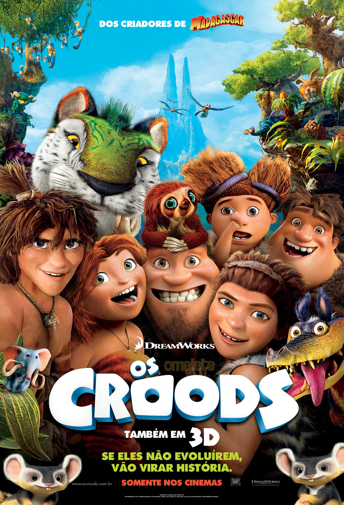

Os Croods. |
|
|  | Gênero. Animação |
| Sinopse. Em plena era pré-histórica, escondidos na maior parte do tempo dentro de uma caverna, vivem Grug (Nicolas Cage / Hércules Franco), a esposa Ugga (Catherine Keener / Bárbara Monteiro), a vovó (Cloris Leachman / Mariângela Cantú), o garoto Thunk (Clark Duke / Fred Mascarenhas), a pequena e feroz Sandy (Randy Thom / Pâmela Rodrigues) e a jovem Eep (Emma Stone / Luísa Palomanes). |
|
| Diretor. Chris Sanders, Kirk DeMicco. | |
| Elenco. Nicolas Cage (Grug), Ryan Reynolds (Guy), Emma Stone (Eep), Catherine Keener (Ugga). |
|
| Dia de Lançamento. 22 de Março de 2013. |
|
 
   |
|